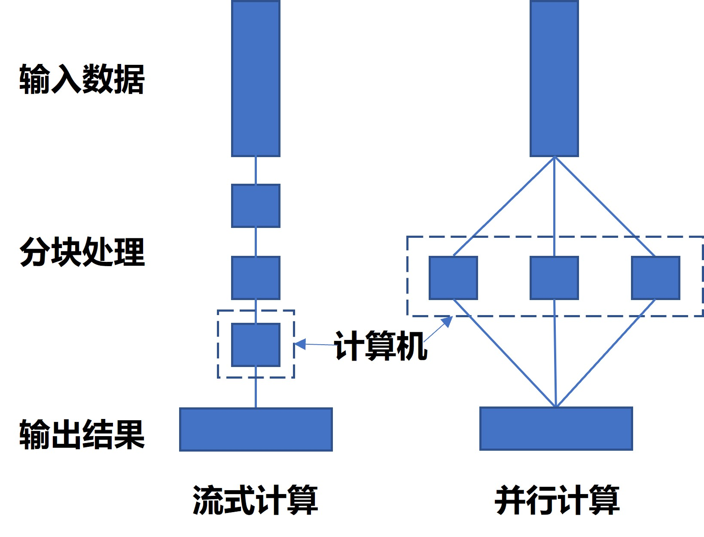

11 空间换时间：大数据并行计算
在大数据时代，海量数据的处理需求对计算资源提出了前所未有的挑战。传统的单线程计算方式已无法满足这种需求，因此，并行计算应运而生。通过将计算任务拆分并分配到多个处理器上，同时进行处理，不仅可以大幅提升计算速度，还能够更有效地利用硬件资源，实现“空间换时间”的优化目标。本章将深入探讨大数据并行计算的基本原理、主要技术及其在实际应用中的重要性，并提供在R环境中实际操作的指南和实例。
11.1 基本思想
并行计算的基本思想是通过将一个大型计算任务分解为多个小任务，并同时在多个处理单元上执行这些小任务，从而加速计算过程。与串行计算不同，串行计算依赖于单个处理器依次完成所有任务，而并行计算通过多处理器协同工作，可以显著提高计算效率和处理速度。这种方法充分利用了现代计算机多核、多处理器架构的优势，适用于大数据处理、高性能计算和实时数据分析等领域。在并行计算中，任务的分解、负载均衡、数据通信和同步是关键技术，通过合理的设计和优化，可以实现高效的并行处理。
与前面所讲的流式计算类似，并行计算也对数据进行了分块。但是在流式计算中，分块的意义在于本机容量只够分析一块的内容因此不得不分块，而在并行计算中计算机容量远远大于数据总量，因此可以先把数据进行分块，然后利用多核心、多线程同时对多块数据同时进行处理，从而减少任务完成的时间（见图11.1）。
在R语言中，很多包（如data.table、xgboost等）在内部设计的时候已经设置了并行，因此我们不需要额外进行设置就可以享受并行带来的效率提升，我们一般把这种方式使用并行的手段称为隐式并行计算。隐式计算对用户隐藏了大部分细节，用户不需要知道具体数据分配方式、算法的实现或者底层的硬件资源分配，系统会根据当前的硬件资源来自动启动计算核心。而相对应的还有显示并行计算，显式计算要求用户能够自己处理算例中数据划分，任务分配，计算以及最后的结果收集。因此，显式计算模式对用户的要求更高，用户不仅需要理解自己的算法，还需要对并行计算和硬件有一定的理解。由于隐式计算并不需要我们进行学习就可以使用，因此在后面的部分，我们将会聚焦在显式并行计算，介绍如何在R中实现这种显式并行计算方法。
11.2 实现方案
11.2.1 基于future的并行框架简介
无论是在高性能计算集群、服务器还是在个人笔记本或台式机上，都可以实现并行计算。总的来说，施行并行计算是为了加快计算、节省时间。在当前的R生态中，future框架是实现并行计算的最佳选择之一，本部门将会选取该框架的例子进行介绍。future包是R语言中一个灵活且强大的并行计算包，旨在简化并行和分布式计算的实现。它通过提供一致的接口和多种并行计划，允许用户轻松地编写并行代码。在这个体系中，提出了若干核心概念：
- future对象：future是一个抽象概念，表示一个异步计算任务。用户可以创建一个future对象，并将计算任务提交给它。任务会在后台执行，用户可以在以后获取其结果。
- 计划（Plan）：future框架支持多种执行计划，定义了计算任务的执行方式。常见的计划包括：
- Sequential（串行）：默认计划，按顺序执行任务。
- Multisession（多进程）：在多个R进程中并行执行任务。
- Multicore（多核）：在多个CPU核心上并行执行任务（不适用于Windows）。
- Cluster（集群）：在计算机集群上分布式执行任务。
- Remote（远程）：在远程机器上执行任务。
- 异步执行：future框架支持异步计算，即任务提交后，用户可以继续进行其他操作，直到需要获取结果时再等待任务完成。
future框架提供简洁的接口和灵活的执行计划，简化了并行和分布式计算的实现，且能与其他包结合使用以扩展功能。它适用于多核并行计算、分布式计算和异步编程，且兼容不同操作系统和计算环境。总体而言，future框架为各种计算密集型和大规模数据处理应用提供了一致且高效的解决方案。
Futureverse是一个围绕future包构建的并行和分布式计算生态系统，旨在简化这些复杂计算任务的实现。通过提供一套统一且灵活的接口，Futureverse使得用户能够在各种计算环境中轻松执行并行任务。这个生态系统包含了多个相互协作的包，每个包都专注于不同的功能领域，从而形成一个强大的并行计算工具集。核心包future提供了基础的并行和分布式计算功能，而Futureverse中的其他包则在此基础上，提供了更高层次和更具体的功能。例如，future.apply扩展了apply家族函数（如lapply、sapply等）的功能，使其能够在并行计算环境中运行；doFuture与foreach包集成，使得foreach循环可以利用future包的并行计算功能；furrr则与purrr包集成，允许用户使用purrr风格的函数式编程方式进行并行计算。还有future.batchtools，它与batchtools包集成，使用户能够在高性能计算集群中提交并管理并行任务。关于整个框架所包含的工具包，可以参考官方的介绍文档（https://www.futureverse.org/packages-overview.html）。Futureverse通过这些扩展包的无缝集成，极大地提升了future包的功能和应用范围。它不仅提供了简洁的接口和灵活的执行计划，还保证了极高的可扩展性和平台兼容性，适用于不同操作系统和计算环境。无论是多核并行计算、分布式计算，还是异步编程，Futureverse都能简化复杂计算任务的实现，大大提升了R语言在计算密集型和大规模数据处理中的应用能力。
11.2.2 基于future.apply的并行操作实现
Futureverse从底层到顶层的设计都非常强大而精妙，这使得用户在使用的时候也极其便利，几乎不需要做过多的额外设置就能够对数据处理使用并行操作。以future.apply包为例，如果在基本包中我们使用的操作lapply操作：
# 对mtcars的每一列求均值，赋值给y
y = lapply(mtcars,mean)如果要对这个操作进行并行化，可以这样操作：
# 加载包
library(future.apply)
# 设置并行计划：多进程
plan(multisession)
# 执行操作
y = future_lapply(mtcars,mean)我们可以看到，我们只是多加载了future.apply包，然后设置了一个策略，最后把日常使用的lapply函数改为future_apply即可。future_apply包支持并行化的基本包向量化函数除了lapply之外，还包括sapply、apply、tapply、vapply等，感兴趣的读者可以在官网（https://future.apply.futureverse.org/index.html）进行查阅。
11.2.3 异步计算
异步计算是一种编程技术，通过并行或分布式处理来同时执行多个任务，而不必等待每个任务顺序完成。这种方法使得程序能够在处理耗时任务时保持响应性，从而提高整体性能。在R语言中，future包提供了一种简单而强大的方式来实现异步计算。通过创建future对象，可以在后台执行计算任务，同时主线程可以继续进行其他操作。下面我们举一个例子：
# 加载包
library(future)
# 定义一个耗时求和任务
slow_sum <- function(x) {
sum <- 0
for (value in x) {
Sys.sleep(1.0) ## 每次迭代都要暂停1秒
sum <- sum + value
}
sum
}
# 创建future指令，让任务在后台执行
f = future(slow_sum(1:5))
# 观察任务是否执行成功
r0 = resolved(f)
# 获取任务返回值
v = value(f)
# 观察任务是否执行成功
r1 = resolved(f)在上面的代码中，我们首先定义了一个耗时的任务，只要求和数字的数量多1个，那么我们需要的时间就多1秒。然后，我们先使用future函数创建一个指令并进行赋值，它会在后台运行，可以使用resolved函数观察指令是否运行完毕。我们可以看到，r0的值为FALSE，而r1的值为TRUE。可以看到，取值前其实表达式还没有运行完毕，但是在取值必定需要等程序运行完毕才能返回结果，因此取值之后再去检查是否运行完毕，必定是已经完成了。
实际应用中，我们往往会直接进行赋值，而不需要总是去看前面的任务是否完成，那么可以使用future中给出的特殊赋值符号%<-%，它会对右边的表达式进行评估，然后在完成后第一时间赋值给左边的变量。举例入下：
x %<-% slow_sum(1:3) # 马上执行完毕，计算在后台运行，完成后马上完成赋值
y %<-% slow_sum(2:4)
z = x + y看到上面的代码，我们就可以知道，我们以后在进行代码运行的时候，可以先让一个代码进行推进，然后继续写代码，等到后面代码写好了，前面代码也运行完了，这样可以提高效率。否则的话，我们每次都必须等待前面的代码运行完毕，才能够进行下一步的操作。关于异步操作更多的特性，推荐参考设计者提供的教程（https://henrikbengtsson.github.io/course-stanford-futureverse-2023/future-api.html）。在实践中，异步计算特别适用于需要同时处理多个独立任务的场景，例如网络请求、文件I/O操作和复杂计算任务。
11.3 注意事项
- 在使用并行计算之前，第一要务是确认计算是否可以并行化。并行操作的一个重要特性就是符合map-reduce的逻辑，能够进行划分-操作-合并（split-apply-combine）。比如计算斐波那契数列，这个任务每次计算一个数字都需要前面两个数字，那么这就是一个串行的任务，无法利用并行进行计算。在确定采用并行计算之前，必须确保不同任务之间具有独立性，不会相互依赖，才可以。一个简单的方法是，尝试把即将要并行化的序列打乱，看看得到的结果是否与原始一致，如果是一致的，那么一般都可以进行并行化操作。
- 使用并行计算要关心异常处理。如果在并行操作中，其中一个分支出现了错误，有时候会导致所有计算都化为泡影，这样浪费了大量的时间和资源，最后却没有任何结果。正确的做法是在设计程序的时候就使用
tryCatch等异常处理函数，对出错的情况进行标志，那么当异常情况出现的时候，我们可以对它记录下来，同时保证已经运行的结果得到保存。最后可以锚定异常出现的位置，然后对其进行修正。 - 在future框架中使用并行计算之前，总是先要配置并行计划。一般情况下，选用多线程（multisession）比较稳健，但是如果在条件允许的情况下，往往使用其他的计划会得到更高的性能。比如计算机有多个核心，而且操作系统不是Windows系统的时候，使用多核（multicore）配置往往会得到更佳的效果，因为这种配置能够通过派生（forked）进程来减少资源的复制与传输。更多关于并行计划的配置，可以参考官方提供的资料（https://www.futureverse.org/backends.html）。
- Futureverse生态中，很多顶层设计都是换汤不换药的表达，实质上都是让任务分而治之，然后汇总。因此笔者建议用户选用一种简单的即可。如果是习惯使用tidyverse的用户可以选用furrr包，而对基本包比较熟悉的用户则推荐使用future.apply包。还有一些用户可能已经使用过foreach包，那么可以尝试一下doFuture包。这些顶层设计只是为了用户习惯设计不同的调用函数，实际上进行的并行操作都是统一的。
11.4 小结
并行计算通过将大任务分解为多个独立的小任务，并在多个处理器上同时运行，从而提高数据处理速度和资源利用率。本章介绍了并行计算的基本概念，并讲述了如何在R语言中利用future框架来便捷地实现并行计算。通过这种方式，可以显著加快计算密集型任务的处理速度，适用于各种大规模数据处理和复杂计算场景。
11.5 练习
- 列举可以使用并行的情况。
- 设计一个任务，看看并行计算能给你的任务节省多少时间。
- 运行以下代码，体会一下异步计算的特性（推荐参考材料）。
f = future(slow_sum(1:60))
while(!resolved(f)){
message("等一下，我还在跑...")
Sys.sleep(1.0)
}
message("搞定！")
v = value(f)
v